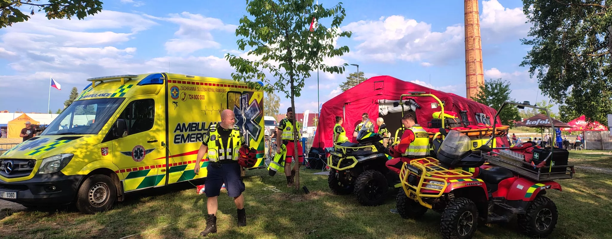

Záchranná služba RR, z. s.
O nás
Záchranná služba Royal Rangers je nezisková organizace, která vykrývá místa, na která běžný systém nestačí. Funguje na principu běžném například v Německu či Itálii, který se opírá o profesionálně vycvičené dobrovolníky připravené k okamžitému nasazení při mimořádných událostech. V minulosti tak její týmy pomáhaly při povodních, vichřicích, během covidové pandemie a uskutečnily také dvě humanitární mise na pomoc lidem zasaženým válkou na Ukrajině.
Tým organizace dnes tvoří zhruba padesátka specialistů. Zatímco část z nich působí v Záchranné službě Royal Rangers na plný úvazek, další se zapojují jako dobrovolníci. Významnou a nepostradatelnou součástí týmu jsou také lékaři a zdravotníci z nemocnic napříč celou Českou republikou.